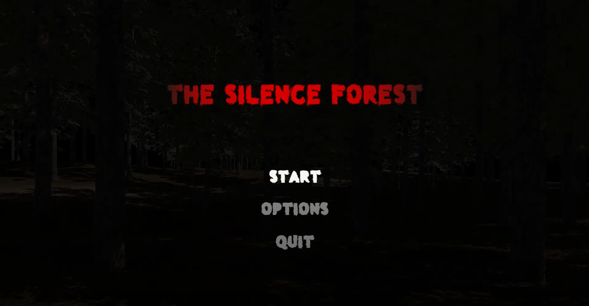

Forest exploration
The environment provides the playable or visual setting. Landforms, landmarks, and surface detail give the space structure and make routes through it recognizable.
Unity
Explore a dark forest, gather keys and supplies, and evade a stalking threat while searching for an escape.


The environment provides the playable or visual setting. Landforms, landmarks, and surface detail give the space structure and make routes through it recognizable.
A visible status value communicates the character’s condition. Changes in that value give actions consequences and make survival or recovery part of the play loop.
The player reads a moving or hidden threat and chooses a safer position. Avoidance makes timing and route selection central to completing the objective.
Project reference preview; recovered build not verified.